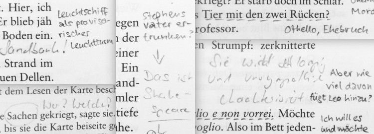

Es gibt Bücher, die ich lesen möchte, weil sie literarisch eine gewisse Bedeutung haben (z. B. Ecos „Der Name der Rose“ oder Goethes „Faust“). Allerdings sind darunter einige, die … sagen wir: weniger zugänglich sind und für die ich eine gewisse Motivation brauche. Für genau diese Fälle habe ich mir eine Lesepartnerin gesucht.
Derzeit lese ich mit einer Freundin den Roman „Ulysses“ von James Joyce. Die Geschichte spielt am 16. Juni 1904, wo der Leser die Hauptfiguren in 18 Episoden durch Dublin begleitet. Der Text ist sehr assoziativ geschrieben, springt gelegentlich unvermittelt, wagt sprachliche Experimente und die Handlung ist leider nicht gerade spannend. Dafür gibt es sehr viele Zitate und Anspielungen, die zu recherchieren dank Websites wie http://m.joyceproject.com/ großes Vergnügen bereitet.
Notizen im Buch
Natürlich motiviert es schon, sich gemeinsam über ein Buch unterhalten zu können und es zeitgleich zu entdecken. Meine Lesefreundin und ich verwenden zusätzlich aber noch einen Bleistift. Während einer von uns in dem Buch liest, schreibt er zu auffälligen Textstellen kurze Kommentare an den Rand oder unterstreicht etwas:

Das können besonders schöne Ausdrücke sein, unklare Formulierungen, Quellen zu Zitaten, eigene Gedanken, Lob für den Autor, Querverweise im Buch, inhaltliche Zusammenfassungen, Bewertungen des vorangegangenen Kapitels … Kurz gesagt: alles, was uns beim Lesen auffällt oder für den anderen interessant sein könnte. Oft finden wir unterschiedliche Textstellen beachtenswert oder stellen uns Fragen, zu denen der andere vielleicht einen Gedanken beisteuern kann.
Weil wir das gleiche Exemplar von „Ulysses“ verwenden, sehen wir die Kommentare des anderen. Wir lesen abwechselnd so, dass man immer einen Teil dessen liest, was der andere schon kommentiert hat, sowie im nächsten Abschnitt selbst derjenige ist, der zum ersten Mal kommentiert. Unsere Leseportionen sind praktisch ineinander verschränkt. Etwa einmal im Monat treffen wir uns dann, übergeben das Buch und tauschen uns darüber aus (wobei einer immer schon ein Stückchen weitergelesen hat).
Was eignet sich als abwechselnde Lektüre?
Es gibt einige Bedingungen für ein gutes „Wechselbuch“, das man mit dem Bleistift lesen möchte. Für die wichtigste Eigenschaft halte ich, dass die Geschichte mehr oder weniger episodisch aufgebaut ist. Wir hatten schon „Mister Aufziehvogel“ von Haruki Murakami als Wechselbuch gelesen, aber das hat nicht so gut geklappt. Ich wollte immer gleich wissen, wie es weitergeht, statt das Buch für einen Monat wegzugeben. Nach einem Wechsel war es auch nicht so leicht, wieder in die Geschichte einzusteigen (Inhaltsnotizen nach dem vorigen Kapitel haben geholfen). Vielleicht muss ein gutes Wechselbuch also tatsächlich ein bisschen langweilig sein …
Außerdem sollte das gewählte Buch schon einen gewissen Umfang haben. Wenn man nach zwei, drei Wechseln damit durch ist, ergeben sich meiner Meinung nach zu wenig Überschneidungen, in denen man die Kommentare des anderen genießen kann. Mit „In Swanns Welt“, dem ersten Band von Marcel Prousts Werks „Auf der Suche nach der verlorenen Zeit“, hat das recht gut geklappt. Das Buch hatte über 500 Seiten und mit einzelnen Leseportionen von ca. 120 Seiten haben wir gemeinsam gut 10 Monate gebraucht.
Zugegebenermaßen dauert es um einiges länger, ein Buch abwechselnd mit dem Bleistift zu lesen (für „Ulysses“ werden wir mehr als ein Jahr brauchen). Es besteht zudem die Gefahr, zwischendurch den Faden zu verlieren. Ein Wechselbuch ermutigt aber zu einer intensiven Lektüre und die Kommentare des anderen motivieren jedes Mal neu einzusteigen. Für eher sperrige Bücher, die man trotzdem gerne lesen möchte, ist so eine Bleistiftlektüre gemeinsam mit einem Lesepartner in meinen Augen eine wunderbare Sache.
Mich würde das wahnsinnig machen, in einem Buch zu lesen, das irgendwie beschriftet oder vollgekritzelt ist, auch dann, wenn die Notizen für mich sind. Wenn ich zufällig ein solches in die Hand bekomme, greife ich als erstes zum Radiergummi. Außerdem braucht man ein ähnliches Lesetempo und muss sich darüber einigen, wer das Buch bekommt. Ein Freund und ich haben uns mal abwechselnd gegenseitig vorgelesen. Das ging.
Wenn ich zufällig ein solches in die Hand bekomme, greife ich als erstes zum Radiergummi.
Als ich das gelesen habe, war meine erste Reaktion: "Nein, das kann doch nicht sein, das ist ja grausam!" Natürlich wird nicht jedes Paar auf dieselbe Art gemeinsam lesen. Dieses ist eine Weise, die den beiden entspricht und gefällt. Und ich finde es durchaus interessant.
Ich finde das sehr spannend, aber würde es nimmernienicht auch so machen können/ wollen, denn das schlimmste, was einem Buch mE passieren kann ist, "beschriftet" zu werden. Wobei ich nicht ans Buch denke, sondern an mein Lesevergnügen. Selbst bei fremden Unterstreichungen gerät mir mein flüssiges lesen aus dem Takt. Ich fühle mich gestört. So als ob meine eigenen Lese-Bilder unterdrückt würden, fremde mir aufgedrückt. Ganz schlimm! Toll allerdings, sich so intensiv über ein Buch austauschen zu können! Ein Lesepartner ist sicherlich etwas tolles :-)
Vielen Dank für eure Kommentare hier und im Bookcrossing-Forum. Den Aspekt, dass man überhaupt in ein Buch hineinschreibt, habe ich in meinem Blogpost ganz vergessen. Es stimmt, einige Bücher erscheinen so „unantastbar“, dass ich sie auch nicht bekritzeln möchte. Das hat für mich etwas mit ihrer Typografie, Aufmachung oder mit dem Text an sich zu tun.
Bei „Ulysses“ (nicht so toll gearbeitete Taschenbuch-Ausgabe) denke ich, dass meine Lesefreundin und ich noch eine dünne Schicht hinzufügen, die den Text vielleicht sogar bereichert. Einige Stellen hätte ich ohne Markierung schlicht überlesen. Stellenweise ist das zugegebenermaßen eher ein analytisches Lesen, als ein genussvolles Abtauchen in die Geschichte – für „Ulysses“ passt das meiner Meinung nach aber recht gut.
Ein weiterer Aspekt: Die Notizen machen das Buch wieder mehr zum Gegenstand. So wie wenn sich vielleicht das Papier wellt, weil es auf der Zugreise zu meiner Berliner Cousine im Regen nass geworden ist; wenn zwischen den Seiten noch ein gepresstes Blatt vom Ginkgo-Baum aus dem Garten meiner Eltern liegt, … Das Buch, nein: dieses Buch hat mich ein Stück meines Lebens begleitet; ich habe mich damit auseinander gesetzt, es genossen, mich darüber geärgert, mich inspirieren lassen. Durch die Notizen bleibt ein Stück dieser gemeinsamen Reise im Buch zurück (viel direkter als ein kürzerer, allgemeinerer Journal-Eintrag bei Bookcrossing) – das kann der nachfolgende Leser beflügelnd oder störend finden.
Nach gut vierzehn Monaten sind wir mit Joyce’ Ulysses nun durch. Es war ein Abenteuer, das ich ohne meine Lesepartnerin vermutlich nicht durchgehalten hätte. Wie erwartet war die Handlung eher banal, aber die Form und Sprache fand ich sehr inspirierend. Besonders angesprochen haben mich die Kapitel 10 („Irrfelsen“: Kurze Szenen verschiedener Spaziergänger, die aufeinander Bezug nehmen, einander ergänzen), 17 („Ithaka“: Die Handlung wird präsentiert als Antworten auf nachforschende Fragen) und natürlich 14 („Die Rinder des Sonnengottes“: Während eine Frau gebiert, entwickelt sich die Sprache des Kapitels von fast unverständlichem Mittelhochdeutsch bzw. Altenglisch zum flapsigen Slang der Gegenwart).
Wem das ganze Buch – immerhin 980 Seiten – zu umfangreich sein sollte, der kann einfach mal in einzelne Kapitel hineinschnuppern, zum Beispiel auch in Kapitel 18 (Penelope), das James Joyce im bekannten Bewusstseinsstrom verfasst hat; oder in Kapitel 7 (Äolus), das die Form kurzer Zeitungsartikel imitiert.
Artikel kommentieren
Ich lege Wert auf eine respektvolle Diskussion und überprüfe jeden Kommentar, bevor er hier erscheint. Beleidigende oder unsachliche Beiträge ignoriere ich mit großem Vergnügen. Alle Angaben sind freiwillig.
Formatierungen mit HTML sind möglich, z. B. <em>betont</em>, <strong>hervorgehoben</strong> oder <code>Quelltext</code>. Außerdem Verlinkungen (<a href="http://verlinkte-website.de">Linktext</a>) und Bilder (<img src="http://pfad-zum.de/bild.jpg" alt="Bildbeschreibung">).
 @charak
@charak